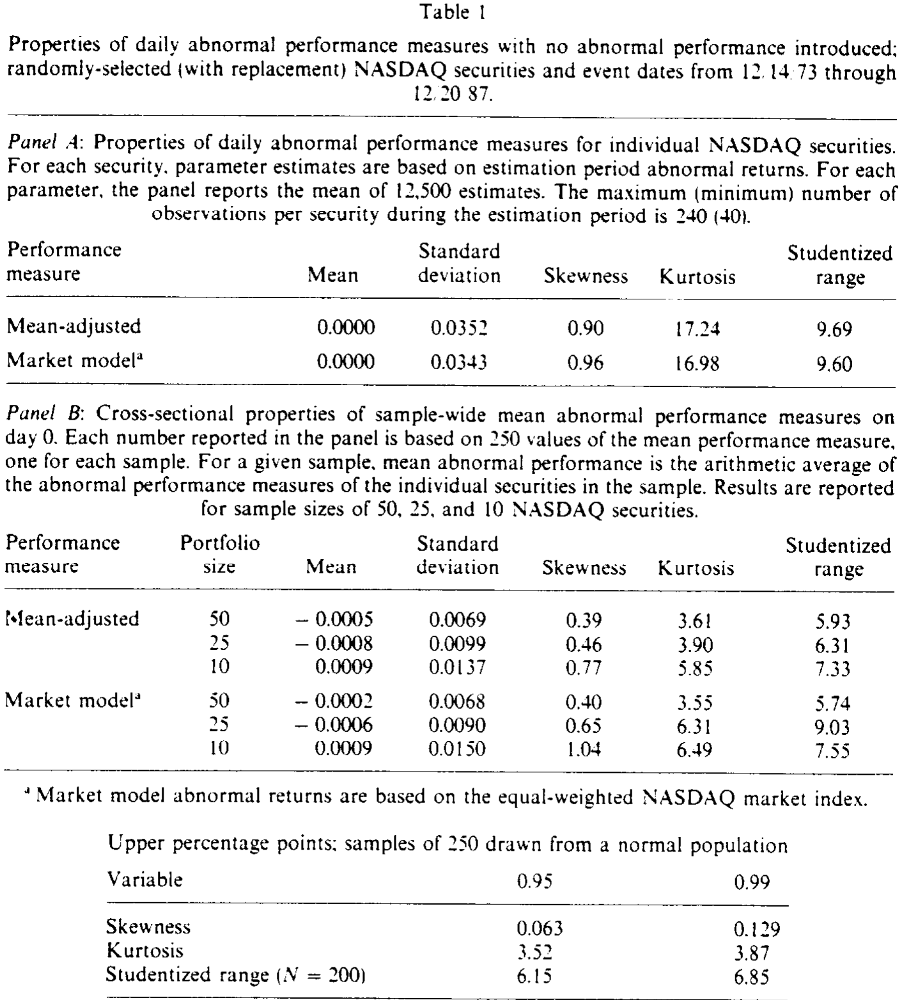
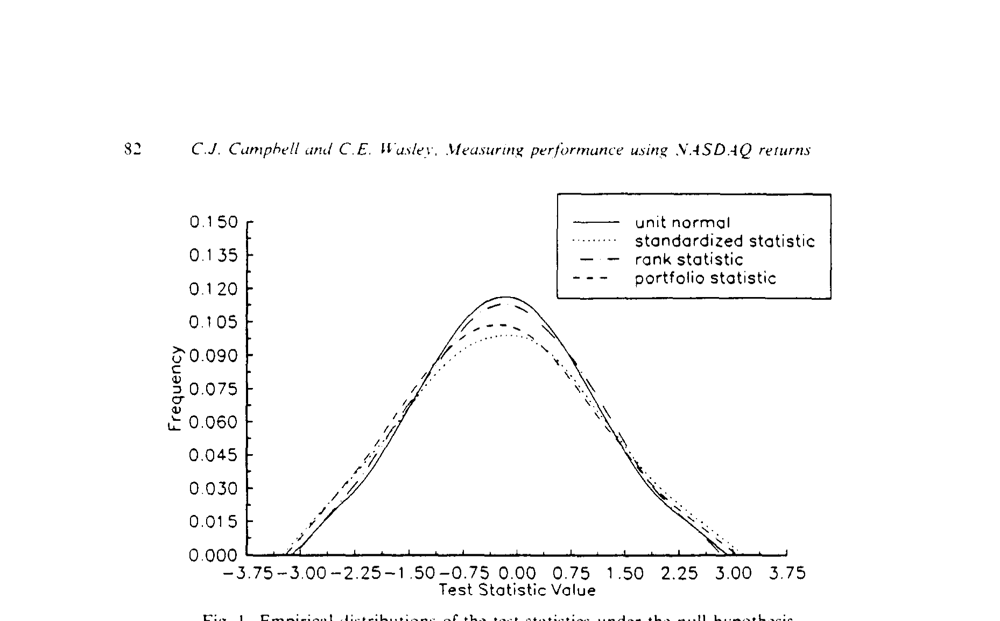
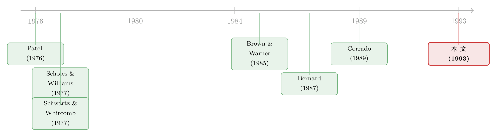

纳斯达克的收益里藏着「假阳性」——一篇给事件研究挑尺子的论文
本文读的是 Campbell & Wasley (1993, Journal of Financial Economics)：当事件研究的样本里掺进了 NASDAQ 股票，常用的两个参数检验统计量（标准化统计量与组合统计量）会在原假设下「无中生有」地拒绝太多次，而 Corrado (1989) 那个非参数的秩统计量几乎不受影响——作者因此建议，凡是 NASDAQ 样本，就用秩统计量配等权 NASDAQ 指数的市场模型异常收益。
1 一个让人不安的小问题
先从一桩谁都做过、却谁都没细想过的事说起。
你手里有一批公司，想知道某个事件（一次并购公告、一笔增发、一份盈余预告）有没有让股价「异动」。标准动作是：算出每只股票在事件日的 异常收益 (abnormal return)，把它们平均起来，再除以一个标准差，得到一个检验统计量，然后对着标准正态分布查表——统计量超过 1.96，就宣布「5% 水平上显著」。
这套流程的合法性，全压在一个假设上：在「什么都没发生」的世界里，这个统计量应该乖乖地服从单位正态分布。Brown and Warner (1985) 当年用纽交所和美交所 (NYSE/ASE) 的日收益反复验证过，结论是令人安心的——日收益虽然不完全正态，但对检验统计量的设定「构不成严重问题」。于是大家就放心地用了下去。
但 Brown 和 Warner 验的是 NYSE/ASE。接着，一个自然的问题是：当 CRSP 在上世纪八十年代末把 NASDAQ 的日收益数据也放出来、越来越多的实证研究开始把 NASDAQ 股票塞进样本时，那套尺子还准吗？
这正是 Campbell 和 Wasley 要回答的。而他们的答案，足以让任何做过事件研究的人后背发凉：对 NASDAQ 样本，最常用的那个「标准化统计量」在绝大多数情形下都是错的——它会在根本没有异常表现的时候，把原假设拒绝得太频繁。换句话说，你以为自己抓到了一个显著的市场反应，很可能只是尺子本身在抖。
2 病根：NASDAQ 的收益「太不正态」
要理解尺子为什么会抖，得先看清 NASDAQ 收益到底「怪」在哪。
参数检验统计量的命门是 正态性 (normality)。而 NASDAQ 的日收益，恰恰在好几个维度上系统性地背离正态：
第一，价格太低、跳动太粗。 1973–1987 年间，NASDAQ 股票的平均价是 $11.63，而 NYSE/ASE 是 $21.59。绝大多数股票按八分之一美元报价，一个最小跳动单位 (tick) 对 NASDAQ 来说就是均价的 1.10%，对 NYSE/ASE 只有 0.55%。价格越低，离散化造成的「价格取整」误差越大，观测收益的方差就被人为抬高（这个机理早在 Schwartz and Whitcomb (1977) 就讨论过）。
第二，交易太薄、买卖价差太宽，导致大量「零收益」与「极端收益」并存。 作者随机抽了三百万个 NASDAQ 日收益，发现零收益出现的频率比同样规模的 NYSE/ASE 样本高出 127%。一只股票今天没成交、明天猛跳一下，时间序列就被切成一段段「不动—暴动—不动」。
把这些拼起来，结果就是：单只 NASDAQ 股票估计期异常收益的 偏度 (skewness) 系数都在 0.90 以上，峰度 (kurtosis) 约 17.0，学生化极差 (studentized range) 不低于 9.6——三个指标全部越过了正态总体的 99% 分位。其中峰度和学生化极差，比 Brown and Warner (1985) 报告的 NYSE/ASE 数值分别高出 30% 和 127%。

Table I
更要命的是，这种非正态在组合层面仍然顽固存在。一般我们指望靠中心极限定理「洗白」：把很多只股票平均起来，分布总该向正态收敛吧？可对 50 只 NASDAQ 股票构成的组合，事件日平均异常收益的横截面偏度仍约 0.40、峰度 3.55 以上——大约是 50 只 NYSE/ASE 组合的四到五倍。要一直加到 100 只股票，分布才勉强回到正态。
3 尺子是怎么抖起来的：三个统计量的设定
带着「收益不正态」这个病根，我们来看作者拿来对质的三把尺子。它们都来自 Brown and Warner (1985) 和 Corrado (1989) 的工具箱。
设 \(R_{it}\) 为股票 \(i\) 在第 \(t\) 日的原始收益。两种异常收益的定义是：
$$U_{it} = R_{it} - \bar{R}_i$$
（均值调整法，mean-adjusted，\(\bar{R}_i\) 为估计期平均收益）
$$U_{it} = R_{it} - (\hat{\alpha}_i + \hat{\beta}_i R_{mt})$$
（市场模型法，market model，\(R_{mt}\) 取等权 NASDAQ 指数收益）。这里要先记下一个伏笔：作者试过五种别的指数（CRSP NYSE/ASE 市值加权、等权，CRSP NASDAQ 市值加权，NASDAQ 综合指数），发现换了指数要么拒绝太多、要么检验功效骤降——尤其 CRSP NYSE/ASE 市值加权指数在 NASDAQ 样本里千万别用。
第一把尺子，组合统计量 (portfolio test statistic)：
$$\frac{\bar{U}_t}{s(\bar{U}_t)}, \qquad \bar{U}_t = \frac{1}{N}\sum_{i=1}^{N} U_{it}$$
它把整个组合的事件日平均异常收益，除以一个在估计期 240 天上用时间序列估出来的标准差 \(s(\bar{U}_t)\)。这一步很关键：在组合层面估方差，等于绕开了「逐只股票估标准差」的误差，所以它后面表现得没那么糟。
第二把尺子，标准化统计量 (standardized test statistic)：
$$\sum_{i=1}^{N} \left(\frac{U_{i0}}{s_i}\right)\Big/\sqrt{N}$$
它先把每只股票的事件日异常收益，除以那只股票自己估计期残差的标准差 \(s_i\)，再加总、除以 \(\sqrt{N}\)。问题就出在这个 \(s_i\) 上——NASDAQ 那么多零收益和极端收益，会把单只股票标准差的估计搅得乱七八糟。而且它要求标准化后的横截面均值收敛到正态，可作者发现，标准化后组合异常收益的偏度和峰度，至少是未标准化时的四倍。两头不讨好，于是它在原假设下拒绝得最凶。
但真正关键的一步，是第三把尺子——秩统计量 (rank statistic)。
4 反转：把收益换成「名次」
Corrado (1989) 提出的秩统计量，思路是釜底抽薪：既然问题出在收益分布太歪，那我干脆不看收益的数值，只看它的名次。
具体做法是，把每只股票在整个 261 天（估计期 250 天 + 事件期 11 天）里的异常收益序列，转换成各自的秩 (rank)：
$$k_{it} = \text{rank}(U_{it}), \quad t = -250, \dots, +10$$
然后比较事件日（第 0 天）的秩，相对于「期望名次」偏离了多少。这个最核心的方程，逐项拆开是这样的：
其中期望名次 \(E(k_i) = (0.5\,T_i + 0.5)\)，\(T_i\) 是股票 \(i\) 在估计期与事件期合计的非缺失收益个数；分母
$$s(k) = \sqrt{\frac{1}{261}\sum_{t=-250}^{+10}\left[\frac{1}{N}\sum_{i=1}^{N}\big(k_{it}-E(k_i)\big)\right]^2}$$
是用全部 261 天的「组合平均名次偏离」算出来的标准差。
为什么这一招管用？直觉很简单：名次是分布无关的。无论原始收益多么尖峰厚尾、多么偏斜，把它转成秩之后，秩的分布永远是均匀的、对称的。横截面里那点要命的不对称，在「换成名次」这一步就被熨平了。所以 NASDAQ 收益的种种「怪」，对秩统计量的设定根本不构成威胁——它随 \(N\) 增大平滑地收敛到单位正态。
作者顺势下了一个预判：既然 NASDAQ 比 NYSE/ASE 更不正态，那秩统计量相对参数统计量的优势，在 NASDAQ 样本里只会比 Corrado (1989) 当年在 NYSE/ASE 里发现的更明显。
5 实验台上的对质
光有直觉不够，作者用一场大规模模拟把三把尺子摁在台上逐一过秤。
数据与设计。 从 CRSP NASDAQ 日收益文件里有放回地抽样，构造 250 个样本，规模分别为 10、25、50 只股票。每选中一只股票，就在 12/11/73 到 12/20/87 之间随机指定一个事件日（第 0 天），抽取 261 天的收益序列。估计期是第 $-250$ 到 $-11$ 天，事件期是第 $-10$ 到 $+10$ 天。要制造「真有异常表现」的对照场景，就往事件日收益里人为植入一个固定幅度的异常收益——幅度限制在 ±1% 以内，因为前面说过，一个 tick 就值均价的 1.10%，再大就不真实了。
判定标准也定得很干净：在没有异常表现时，一个统计量若在 5%（1%）名义水平下，第一类错误率落在 2%–8%（0%–2.2%）之间，就算「设定正确」。

Figure I: Empirical distributions of the test statistics under the null hypothesis
先看原假设下（图 1）。 这张图把三个统计量的经验分布叠在理论单位正态上。结论触目惊心：组合统计量与标准化统计量在原假设下的标准差都约为 1.3——而 Brown and Warner (1985) 报告的 NYSE/ASE 值是 0.9，Corrado (1989) 是 1.0。两个参数统计量的分布中段更平、两尾更厚，明显偏离正态；唯有秩统计量的分布与单位正态几乎严丝合缝。
再看设定（表 3 的逻辑）。 在 5% 水平下，标准化统计量的第一类错误率达到或超过 8.0%，越线。在 1% 水平下，组合与标准化统计量的错误率都达到或超过 2.8%，双双越线。而秩统计量在 1% 水平下，无论样本大小都找不到误设定的证据。
最后看功效（power），这才是秩统计量真正碾压的地方。 当植入 1% 的异常表现、用 5% 的检验水平时：
- 均值调整收益下，秩统计量的拒绝率是
100%，组合统计量只有50.0%； - 换成 1% 的检验水平，对应是
99.2%对29.2%。
而且这种优势不随样本缩小而消退：在 25（10）只股票的样本里，秩统计量能检出 1% 异常表现的概率约 95%（75%），组合统计量只有 32%（20%）。一句话——秩统计量既设定得更准，又检出得更狠。
作者还做了一长串稳健性检验：多日事件窗（2 日、5 日、11 日）、聚集的事件日 (clustered event dates)、NYSE/ASE 与 NASDAQ 混合样本、NMS 与非 NMS 之分、事件日方差骤增、不同的 beta 估计方式（以应对 Scholes and Williams (1977) 式的非同步交易）。基本结论纹丝不动。
6 文献脉络
把这条线索捋一捋，会看到一个非常清晰的「方法论接力」。
最早的源头是两支独立的暗流。一支是 Schwartz and Whitcomb (1977) 对低价股价格取整、市场模型残差序列相关的关注——它解释了 NASDAQ 收益方差为何天然偏大。另一支是 Patell (1976) 把异常收益按标准差「标准化」的思路，以及 Scholes and Williams (1977) 处理非同步交易下 beta 估计的办法，它们共同搭起了参数检验统计量的脚手架。

真正把事件研究方法论「立规矩」的，是 Brown and Warner (1985)——它用 NYSE/ASE 数据系统检验了各类统计量的设定，得出「日收益的非正态不构成严重问题」的安心结论，成了后来所有事件研究的默认手册。Bernard (1987) 则补上了横截面相依 (cross-sectional dependence) 这一块对推断的影响。
转折点是 Corrado (1989)：他提出非参数的秩统计量，证明它在 NYSE/ASE 样本里就已经比参数统计量更稳、更有力。Campbell and Wasley (1993)（本文）所处的位置，正是把这条线推到 NASDAQ 这个「最坏情形」——既然 NASDAQ 收益比 NYSE/ASE 更不正态，那么秩统计量的优势会被放大到何种程度？答案是：放大到「凡 NASDAQ 样本，请直接用秩统计量」的程度。（顺带一提，本文作者之一 Wasley，也参与了 Handa, Kothari and Wasley (1989) 那篇关于收益区间与 beta 的工作。）
这条「给事件研究挑尺子」的关切，今天仍未过时——后来对横截面 t 值是否等于因果的反思，可参见《事件研究里的「假阳性」：当一根 t 值不再等于因果》；而 NASDAQ 与 NYSE 收益差异本身的来源之争，则可参见《纳斯达克跑输的那 6%，是「市场结构」，还是塞满了新股？》。
7 评论与延伸（Q&A + 研究方向）
(a) 几个可能的疑问
Q：秩统计量「分布无关」，那它岂不是处处都该用？为什么大家还在用参数统计量？
不是免费午餐。秩变换丢掉了收益的数值大小，只保留次序，因此在收益确实近正态且效应以「幅度」体现的场景里，它会损失一点信息。但本文的关键发现恰恰是：在 NASDAQ 这种严重非正态的样本里，参数统计量丢掉的「设定正确性」远比秩统计量丢掉的那点信息值钱——所以净效果是秩统计量完胜。
Q：组合统计量和标准化统计量都是参数法，为什么前者误设定轻得多？
区别在「在哪一层估方差」。标准化统计量逐只股票估 \(s_i\)，NASDAQ 的零收益和极端收益直接污染了这个估计；组合统计量在组合层面用估计期时间序列估一个 \(s(\bar{U}_t)\)，等于把逐只股票的估计误差平均掉了。所以它的标准差虽然也膨胀到约 1.3，但偏度、峰度没标准化统计量那么离谱。
Q：为什么作者特别强调要用「等权 NASDAQ 指数」，而不是别的指数？
因为指数决定了市场模型异常收益的系统性偏差。作者试了五种指数，发现用 CRSP NYSE/ASE 市值加权指数去给 NASDAQ 股票算异常收益，会在没有异常表现时频繁拒绝原假设——本质上是「拿大盘股的尺子量小盘股」，beta 和市场收益都对不上。等权 NASDAQ 指数与样本股票同源，偏差最小。
Q：把异常表现幅度限制在 ±1% 会不会让结论只适用于「小效应」？
这是个诚实的取舍。作者的理由是 NASDAQ 收益的离散性——一个 tick 就值 1.10%，植入更大的异常收益会和真实的离散跳动混淆。代价是，结论主要刻画的是「小到中等」效应下的功效差异；不过在多日窗、0%–10% 区间的稳健性检验里，秩统计量的优势依旧。
Q：这套结论在今天（小数报价、电子化交易之后）还成立吗？
要打个问号。本文的病根是八分之一美元报价 + 薄交易带来的离散性与零收益。2001 年小数化 (decimalization) 之后 tick 缩到一美分，NASDAQ 的微观结构也大变。非正态多半减轻了，但未必消失——这恰恰是一个值得重做的实证问题（见下）。
Q：聚集事件日 (clustered event dates) 为什么会让设定更糟？
当组合内所有股票共享同一个事件日，横截面相依（Bernard (1987) 强调的那种）无法靠平均消掉，等于有效样本量大幅缩水，非正态和方差膨胀都被放大。作者发现此时参数统计量误设定更严重，而秩统计量相对更稳——但这也是它压力最大的场景之一。
(b) 几个可能的研究问题与提案
1. 小数化之后，重做这场「挑尺子」的实验。 【经济故事】本文的全部张力来自八分之一美元报价的离散性。2001 年小数化把 tick 压到一美分，理论上零收益和价格取整噪声都应大减。那么标准化统计量的误设定是否随之消失？秩统计量的优势是否被抹平？这能直接告诉今天的研究者「老结论还能不能用」。 【可行性】高。CRSP 日收益数据现成，完全复制本文的有放回抽样—植入异常表现—模拟拒绝率框架即可，识别清晰、无需外部冲击。
2. 把这套方法论搬到公司债事件研究上。 【经济故事】公司债比 NASDAQ 股票更极端：交易更稀疏、零收益更多、价格更「黏」。事件研究（评级下调、契约违约、并购公告）在债券市场越来越常见，但检验统计量的设定几乎没人系统验过。债券异常收益的非正态恐怕比 NASDAQ 还严重，秩统计量的优势可能更大。 【可行性】中。数据可用 TRACE 逐笔成交构造日度债券收益；难点在于债券「正常收益模型」本身比股票的市场模型更难设定，需要先解决基准收益的问题，否则误设定来源会混淆。
3. 外资持有人事件下的检验功效。 【经济故事】研究外资进入/退出对个股的影响时，受影响的常是流动性较差、交易较薄的中小盘股——其收益分布的「怪」程度接近本文的 NASDAQ。若沿用默认的参数统计量，这类研究的显著性结论可能系统性偏乐观。 【可行性】中高。可用新兴市场或「可投资度」变化作为事件，配合本文的模拟框架评估在薄交易样本下各统计量的设定与功效；数据（如 MSCI 可投资度、本地交易所成交）可得，识别取决于事件日的外生性。
4. 高频/多资产场景下秩统计量的拓展。 【经济故事】本文的秩变换是单维（收益）的。当一个事件同时冲击股、债、期权多个市场，能否构造一个保留分布无关优势的「多元秩统计量」，在联合检验里既稳又有力？ 【可行性】低到中。理论上诱人，但多元秩统计量的零分布与功效需要新的推导，且高频数据的微观结构噪声会引入新的设定问题，属于方法论研究而非纯实证。
8 我的判断
这篇论文的贡献，是把「事件研究该信哪把尺子」这个看似已被 Brown and Warner (1985) 盖棺定论的问题，在 NASDAQ 这个最不利的角落里重新打开，并给出了一个干脆利落、可直接照搬的操作建议：NASDAQ 样本，用秩统计量配等权 NASDAQ 指数的市场模型异常收益。它的可贵之处在于诚实——作者没有回避标准化统计量被广泛使用却广泛误设定的尴尬，而是用 250 个样本、多场景的模拟把这件事钉死。
对识别（这里是「统计量设定」）的担忧，我有两点。其一，全部结论建立在 1973–1987 这段「八分之一美元报价」的微观结构上，而这套报价制度早已不复存在——结论的外部有效性高度依赖于 tick 大小，今天未必照搬得动（这正是我最想看到的后续：小数化后的重做）。其二，植入异常表现的幅度被限制在 ±1%，对「大效应」事件（如剧烈的并购溢价）下的相对功效，本文说得不多。
但作为一篇方法论论文，它做对了最重要的一件事：它没有止步于「NASDAQ 收益不正态」这个描述性观察，而是一路追到「这对你的 t 值意味着什么、你该换哪把尺子」。对任何今天还在做事件研究的人，它至少留下一条朴素的提醒——在按下「查正态表」之前，先问问你的样本配不配得上那张表。
参考文献
- Bernard, V. (1987). Cross-sectional dependence and problems of inference in market-based accounting research. Journal of Accounting Research 25, 1–48.
- Brown, S. and J. Warner (1985). Using daily stock returns: The case of event studies. Journal of Financial Economics 14, 3–31.
- Campbell, C. J. and C. E. Wasley (1993). Measuring security price performance using daily NASDAQ returns. Journal of Financial Economics 33, 73–92.
- Corrado, C. J. (1989). A nonparametric test for abnormal security-price performance in event studies. Journal of Financial Economics 23, 385–395.
- Handa, P., S. P. Kothari and C. E. Wasley (1989). The relation between the return interval and betas: Implications for the size effect. Journal of Financial Economics 23, 79–100.
- Patell, J. (1976). Corporate forecasts of earnings per share and stock price behavior: Empirical tests. Journal of Accounting Research 14, 246–276.
- Scholes, M. and J. Williams (1977). Estimating betas from nonsynchronous data. Journal of Financial Economics 5, 309–328.
- Schwartz, R. A. and D. K. Whitcomb (1977). Evidence on the presence and causes of serial correlation in market model residuals. Journal of Financial and Quantitative Analysis 12, 291–314.